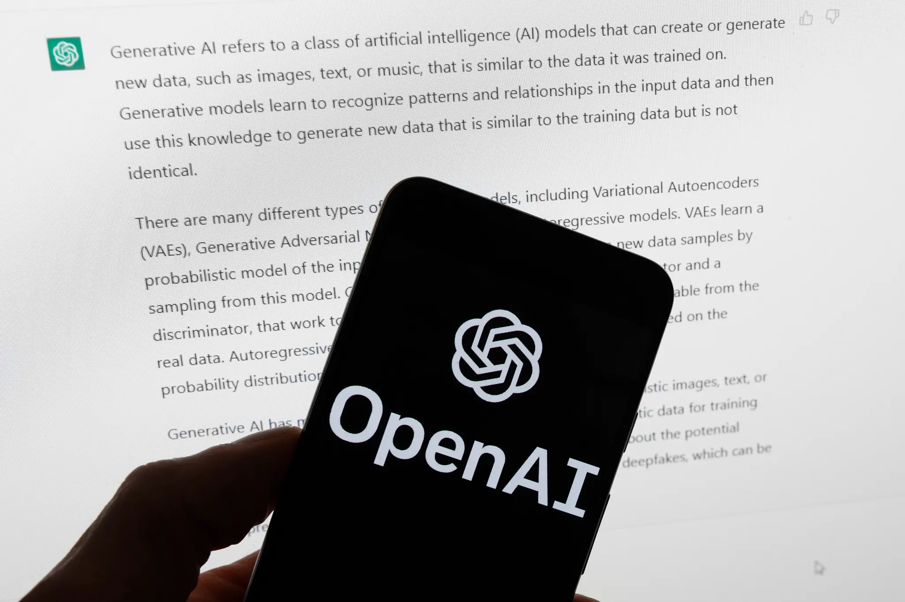

KI overvurderes i bransjer der KI kommer til å påvirke jobbene mest
Nesten hver fjerde nordmann mener at vi allerede har, eller vil ha om kort tid, KI som er like intelligent som mennesker. Det er et problem.

Kortversjon
- Mange nordmenn tror vi snart vil få kunstig generell intelligens (KGI), eller at den allerede finnes, noe som kan føre til mindre kritisk tenkning.
- Tidligere feil i offentlig sektor, som i Nederland, viser at blind tillit til KI kan føre til alvorlige konsekvenser. Språkmodeller har begrensninger og kan ikke forstå verden slik mennesker gjør.
- Flere bransjer, særlig bank, finans og offentlig sektor, har stor tro på at KI vil endre jobbene deres. For å unngå urealistiske forventninger må KI-kompetanse og tilpasning vektlegges.
Sammendraget er laget ved hjelp av kunstig intelligens (KI) og kvalitetssikret av våre journalister.
Sentrale aktører i de store teknologiselskapene, som Sam Altman i OpenAI og Elon Musk i xAI, har lenge markedsført sine nyeste KI-modeller (kunstig intelligens) ved å påstå at de er et nytt skritt på veien mot kunstig generell intelligens (KGI).
Det vil si KI som er minst like intelligent som mennesker på alle områder.
En stor andel nordmenn har latt seg overbevise og mener at vi snart vil få kunstig generell intelligens. En del går faktisk enda lenger enn Altman og Musk og mener vi allerede har slik KI. Det viser en fersk undersøkelse gjennomført gjennom Norsk medborgerpanel ved Universitetet i Bergen.
Dette er problematisk. Både fordi det er en urealistisk vurdering av dagens KI-modeller, og fordi en overvurdering av KI kan føre til mindre kritisk tenkning når vi bruker den.
Vår undersøkelse viser at KI overvurderes i noen av de bransjene der KI vil påvirke jobbene mest.
Intelligens på menneskelig nivå?
Hver gang en ny KI-modell er lansert, har lederne i de store teknologiselskapene gjentatt at den er et skritt på veien mot enda smartere modeller med «kunstig generell intelligens» (KGI). De har argumentert for at modellene er blitt mer og mer kapable etter hvert som de er trent med stadig mer data og datakraft, men uten at den underliggende arkitekturen er endret. Oppskalering er alt du trenger, har vært et slagord.
Det finnes ikke klare kriterier som kan brukes for å avgjøre om en modell har oppnådd KGI. Likevel har spekulasjonen om generell intelligens vært et fremtredende perspektiv på utviklingen, også i mediedekningen og i samfunnsdebatten.
For å finne ut mer om hvordan folk i Norge oppfatter KI-utviklingen, stilte jeg noen spørsmål om dette gjennom Norsk medborgerpanel – en institusjon for meningsmålinger blant et representativt utvalg nordmenn.
Svarene på spørsmålet om generell kunstig intelligens viser at 10 prosent mener vi allerede har KI som er like intelligent som mennesker på alle områder. Men cirka 30 prosent (1–4 år pluss 5–10 år) tror vi vil ha KI som er like intelligent som mennesker på alle områder innen 10 år.
Mange grunner til å tvile
Det er godt dokumentert at overvurdering av KI kan skape problemer. En av de største skandalene i offentlig sektor i Europa skyldtes overvurdering av KI:
Nederlandske myndigheter brukte en upålitelig KI til å forutsi svindel blant mottagere av stønad til barnepass. Ukritisk tillit til prediksjonene gjorde at mange tusen familier feilaktig ble anklaget og straffet økonomisk, og skandalen endte med at statsminister Mark Rutte måtte gå av.
Overvurderingen skapte «automatiseringsbias», det vil si at man satte egne vurderinger til side fordi man antok at teknologien er overlegen. Overvurdering er særlig et problem når man bruker teknologier som kan gjøre uventede feil, slik språkmodellene kan gjøre. En fersk undersøkelse viser at høy tiltro til generativ KI fører til mindre kritisk vurdering av det den foreslår.
Det er mange grunner til å tvile på at språkmodellene har i seg en gnist av intelligens på menneskelig nivå. Problemet med generering av feilaktig informasjon er ikke løst, og med alle språkmodellene risikerer man å få fiksjoner presentert som fakta.
Språkmodellene bygger på ren prediksjon av neste ord basert på en gigantisk sannsynlighetsmodell og har ikke begreper om verden. De er tydelig dårligere på oppgaver som de ikke har sett under treningen, og språkmodeller lærer på helt andre måter enn mennesker.
En sentral aktør som Yann LeCun – pionér i utviklingen av moderne maskinlæring og sjef for utvikling av KI i Meta – mener at modeller som bare er trent på språk, aldri vil kunne lære en modell av verden. Et viktig problem er også at det ikke finnes pålitelige tester for hvor kapable modellene er. En vurdering om at dagens KI snart har intelligens på menneskelig nivå, er derfor en sterk overvurdering av disse modellene.
KI endrer innholdet i jobber
Spekulasjonene om kunstig generell intelligens har bidratt til å skape forventninger om at KI vil endre jobbene våre.
Nesten halvparten av respondentene var enig i dette, i større eller mindre grad. Dataene viste at de som vurderte at vi er nær ved å få kunstig generell intelligens, var mer tilbøyelige til å mene at jobbene i deres bransje ville endre seg mye. Det kan bety at tanker og antagelser om kapasiteten til fremtidig KI preger forventningene til hvordan KI vil endre jobbene våre.
Dersom dette gjelder ledere som ønsker å hente ut produktivitetsgevinster av KI, kan det bety at noen innfører KI med urealistiske forventninger om hva den kan komme til å prestere i fremtiden.
Her må jeg understreke at folk fra ulike bransjer svarer forskjellig på hvor mye de tror KI vil endre jobbene deres. Seks bransjer skilte seg ut ved at folk derfra var sikrest på at KI ville endre jobbene deres.
Vil motvirke overdreven tro
Overvurderingen av KI var spesielt stor i bransjene bank, forsikring og finans, i tillegg til offentlige myndigheter. Her var det stor tro på at vi allerede har eller snart vil få kunstig generell intelligens, kombinert med høy grad av enighet i at KI vil endre arbeidsoppgavene i stor grad. Det kan bety at overvurdering av KI er et mulig større problem i disse bransjene. Merk at utvalget ikke er representativt i hver av bransjene.
Overdrevne forestillinger om hvor smart KI er, fører ikke nødvendigvis til automatiseringsbias. Problemer som følge av overvurdering av KI, kan motvirkes gjennom KI-kompetanse, organisering, samarbeid og individuell tilpasning til arbeidsoppgaver.
Slike konkrete tiltak vil også motvirke overdreven tro på Musks og Altmans spekulasjoner.